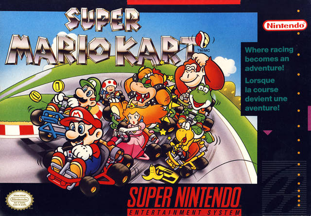
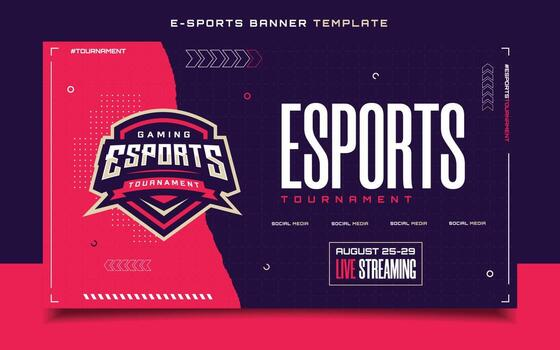
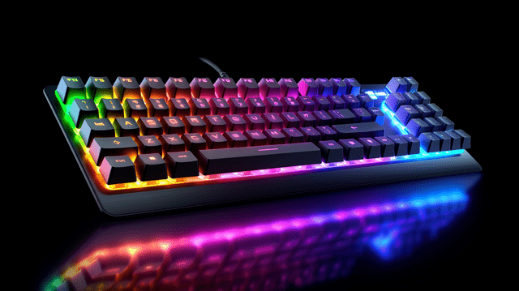

Lançamentos do Ano
O mercado de games continua aquecido com títulos incríveis para consoles e PC. Novas tecnologias de gráficos e inteligência artificial prometem revolucionar como jogamos.

O mercado de games continua aquecido com títulos incríveis para consoles e PC. Novas tecnologias de gráficos e inteligência artificial prometem revolucionar como jogamos.
Desde os primeiros videogames de arcade de 8 bits até a geração atual com carregamentos ultra-rápidos, a evolução marcou épocas.
"Os videogames transformaram a forma como o mundo se diverte."

Os esportes eletrônicos se tornaram um mercado milionário. Torneios mundiais lotam arenas com atletas profissionais disputando prêmios incríveis.

Para melhorar sua performance nas partidas, confira este ranking de boas práticas:
